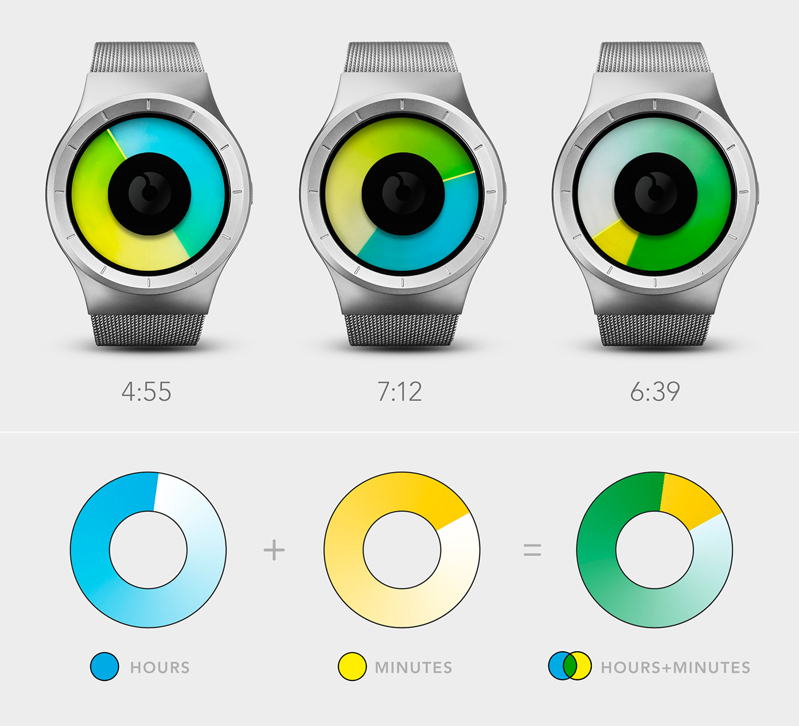

<!DOCTYPE html>
<html>
<head lang="en">
    <meta charset="UTF-8">
    <title>details</title>
    <link rel="stylesheet" href="css/details.css"/>
    <link rel="stylesheet" href="css/reset.css"/>
    <script src="js/auto-size.js"></script>
</head>
<body>
    <div class="wrap">
        <!--<div class="details">-->
            <!--<div class="product_details">-->
                <!--<div class="row row_border">-->
                    <!--<div class="show_img fl">-->
                        <!---->
                    <!--</div>-->
                    <!--<div class="text_info fl">-->
                        <!--<h1>CELESTE Black / Mono</h1>-->
                        <!--<h4>$ 199.00</h4>-->
                        <!--<p>The design of Celeste is inspired by the Northern Lights, anyone who has experienced nature's most fascinating phenomenon never forgets it. Now, you get to experience the Aurora on your wrist, every day.</p>-->
                        <!--<button>ADD TO CART</button>-->
                    <!--<span>-->
                        <!--SKU:Z0005WBBG-->
                    <!--</span>-->
                    <!--<span>-->
                        <!--Category:<a href="javascript:">Celeste</a>-->
                    <!--</span>-->
                    <!--<span>-->
                        <!--Tags:<a href="javascript:">black</a><a href="javascript:">blue</a><a href="javascript:">metal</a>-->
                    <!--</span>-->
                    <!--</div>-->
                <!--</div>-->
                <!--<p class="details_nav row">-->
                    <!--<span>-->
                        <!--<a class="details_nav_active" href="javascript:">DESCRIPTION</a>-->
                    <!--</span>-->
                    <!--<span>-->
                        <!--<a href="javascript:">ADDITIONAL INFORMATION</a>-->
                    <!--</span>-->
                    <!--<span>-->
                        <!--<a href="javascript:">REVIEWS</a>-->
                    <!--</span>-->
                    <!--<span>-->
                        <!--<a href="javascript:">SHIPPING</a>-->
                    <!--</span>-->
                <!--</p>-->
                <!--<div class="row product_features">-->
                    <!--<fieldset>-->
                        <!--<legend>PRODUCT FEATURES</legend>-->
                    <!--</fieldset>-->
                    <!--<div class="row">-->
                        <!--<div class="product_features_cell fl">-->
                            <!---->
                            <!--<h3>INTERCHANGEABILITY</h3>-->
                            <!--<p>Please note that the ZIIIRO Mercury, Celeste, Saturn & Titan watch series are NOT interchangeable with other watches.</p>-->
                        <!--</div>-->
                        <!--<div class="product_features_cell fl">-->
                            <!---->
                            <!--<h3>WRIST SIZE</h3>-->
                            <!--<p>The metal straps of watch models ZIIIRO Mercury, Celeste and Saturn are made to fit a wrist size of about 13.00 cm – 21.00 cm. The size can be easily changed in seconds using a flat screwdriver. See Support page for how to do it.</p>-->
                        <!--</div>-->
                        <!--<div class="product_features_cell fl">-->
                            <!---->
                            <!--<h3>WATER RESISTANCE</h3>-->
                            <!--<p>Water Resistant 3 ATM or 30 m. Suitable for everyday use. Splash/rain resistant. NOT suitable for showering, bathing, swimming, snorkelling, water related work and fishing. If you don’t take your watch for a swim, you should be fine.</p>-->
                        <!--</div>-->
                    <!--</div>-->
                    <!--<fieldset>-->
                        <!--<legend>HOW TO READ THE TIME</legend>-->
                    <!--</fieldset>-->
                    <!--<div class="useMethod row">-->
                        <!---->
                    <!--</div>-->
                    <!--<fieldset>-->
                        <!--<legend>BOOKLET & CATALOGS</legend>-->
                    <!--</fieldset>-->
                    <!--<div class="row booklet">-->
                        <!--<a href="javascript:"></a>-->
                        <!--<h2>Head over to Issuu to browse & download our <a href="javascript:">Booklets & Catalogs</a>.</h2>-->
                    <!--</div>-->
                <!--</div>-->
            <!--</div>-->
        <!--</div>-->
    </div>
</body>
</html>


